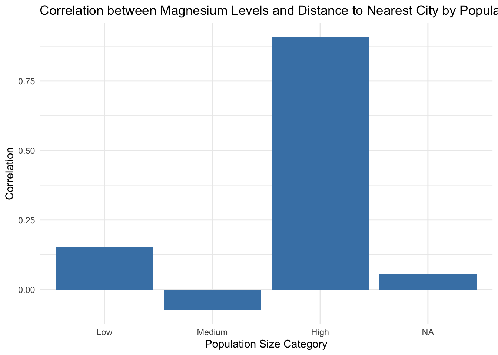
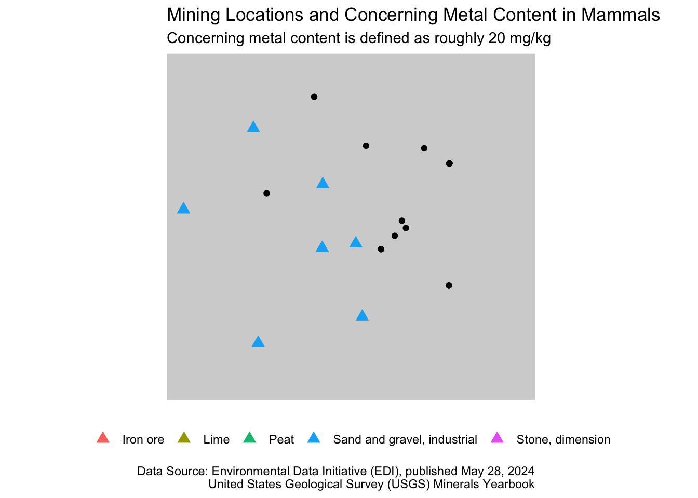
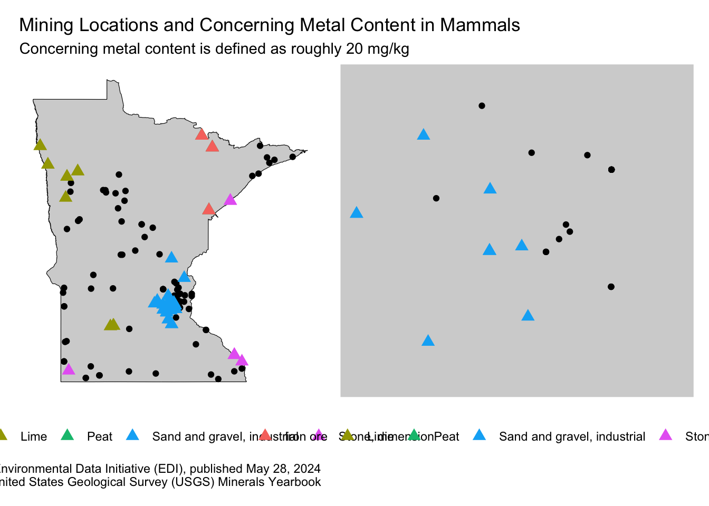
Human activity has been proven over time to have direct impacts on animal metal content. Too much metal can cause neurological and developmental damage in animals. Two of the biggest culprits of this are industry and urbanization. These two have been extremely prevalent in the state of Minnesota. Mining in the north near the Boundary Waters has been the biggest industry in the state for more than a century. Additionally, the mines in the south east of the state have been transformed in many cases into urban development. None of this is good for the animals, and it was especially bad when developers took no heed to be environmentally conscious.
This has lead me to a couple of questions: how has metal content varied over space and time in these mammals? Does this have correlation to where these mining sites are located? What about proximity to large human populations? Additionally, I was curious whether policy decisions in these areas had any effect on these findings. Specifially, there have been a set of policy decisions over the past 50 years in Minnesota that relate to leaded gasoline. I wondered if this might have any impact on lead levels specifically in these mammals.
This dataset makes use of the University of Minnesota’s Bell Museum of Natural History collection examining specimens of four mammal species (a mouse, shrew, bat and squirrel) to ask how tissue metal content has changed over a 94-year time period (1911-2005), and implications for measures of individual performance (body size and cranial capacity). The metal content of organisms is often elevated closer to cities, so these specimens were examined for spatial variation in metal exposure based on their proximity to human populations and the size of those populated areas at the time of collection. Analysis of mammal tissues focused on six heavy metals associated with human activity (Pb, Cd, Zn, Cu, Cr, Ni, Mn), to address whether these anthropogenic metal pollutants vary in concert with human activity.
It is important to note that this analysis operates under an assumption about body size and metal content. Through extensive research, it seems that when this proportion of metal content to body size for small mammals ought not exceed 1.0.
Before we get into the code for building out my full infographic, we need to load our necessary libraries and read in our data.
Below is the code that built up the four visualizations for this infographic. The first shows the map including all of the mining locations in combination with all of the mammal observations in the dataset.
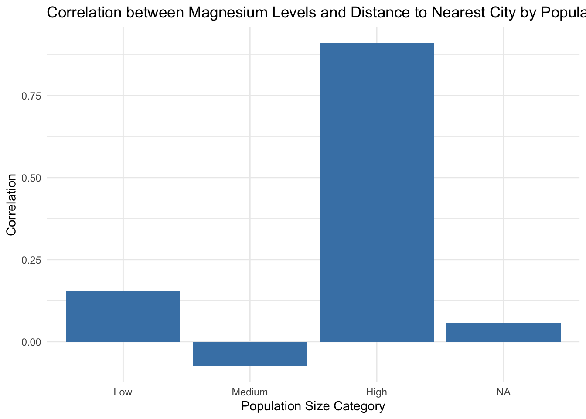
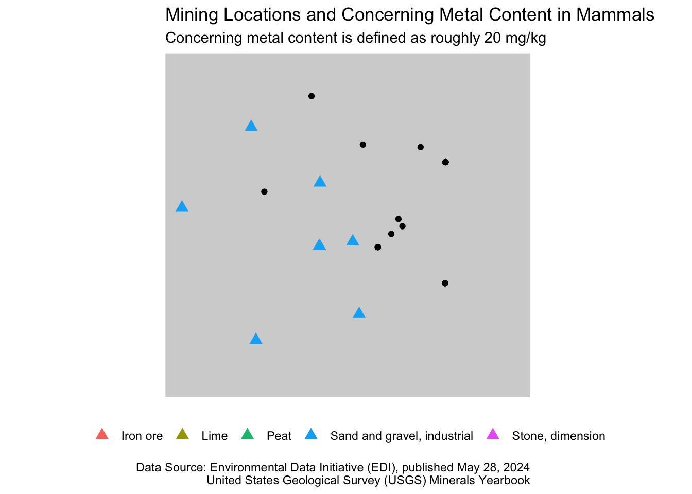
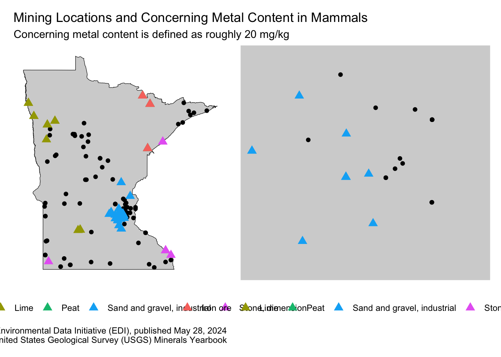
This second plot shows the correlation between the high metal content in animals and the proximity to high population areas. To do this, I split the population data into three categories: low, medium, and high based on population size.
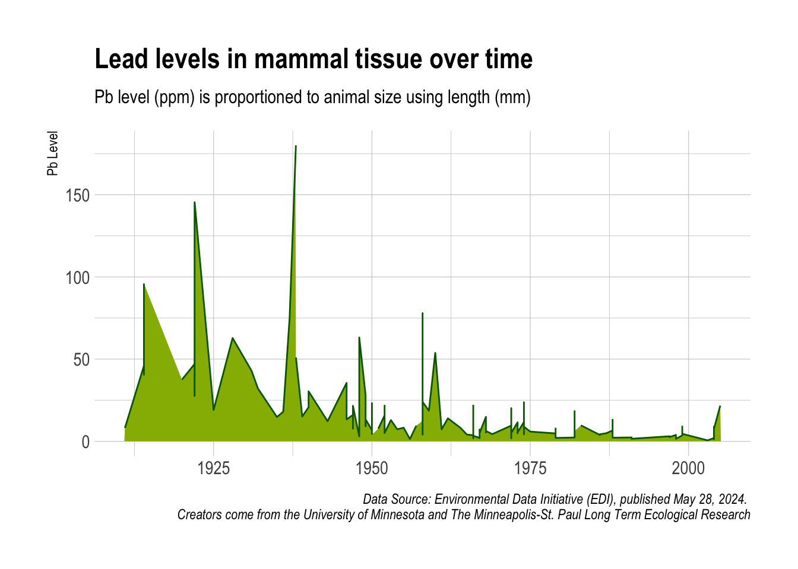
The third plot simply shows the change in lead levels in our mammals over the past century.

Finally, we have our heatmap that shows which counties have the highest proportion of high metal content in their mammals. I filtered this down to only include the highest of those counties, that is the ones that have a ratio over 1.5.
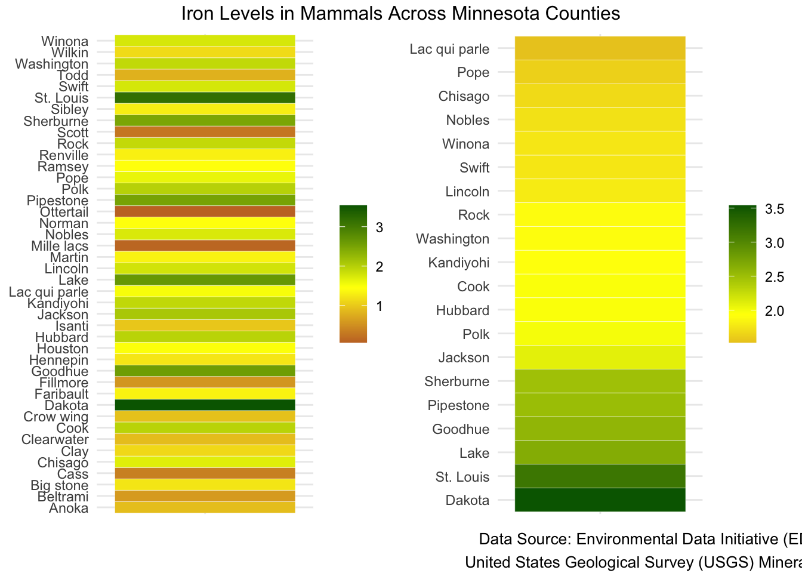
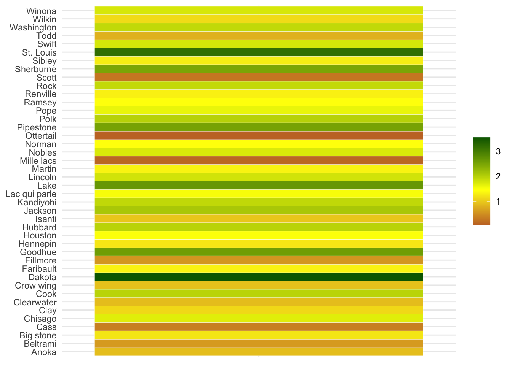
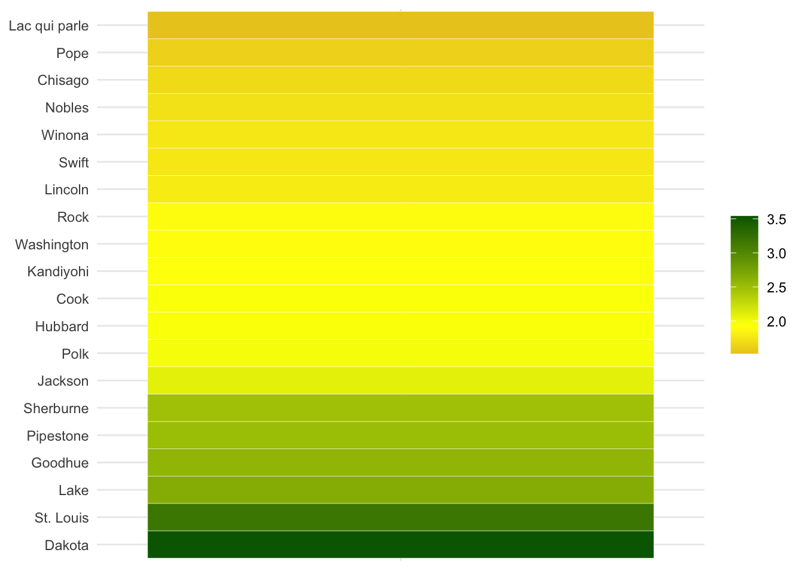
Once I finished all of those plots in ggplot, I moved them into the software Affinity to make aesthetic changes and compile it all into my infographic.
This infographic is aimed at people who have a background in ecology and scientific research, enough to be inquisitive about how human activity might affect animals. The goal is for these people to see the infographic and understand where they should aim their political advocacy. As expected, it seems like the main focus should be this mining and industry that exists in the upper east side of the state, near the Boundary Water Canoe Area in Cook, Lake, and Saint Louis counties. This has been the meeting point of environmentalists and developers for quite some time now. It is my hope that this infographic could continue to spark conversation, but mostly that it could shed light on how important it is to protect our species living in these vulnerable areas.
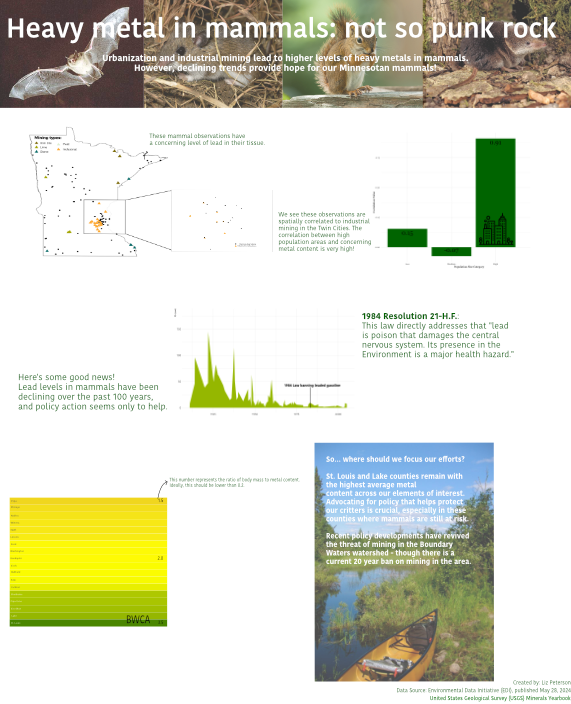
Revisor of Statutes. (1984). Resolution 21 (Session Law 1984, Chapter 21). Minnesota Legislative Reference Library. Retrieved from https://www.revisor.mn.gov/laws/1984/0/Session+Law/Resolution/21/
Snell-Rood, E. C., Kjaer, S. J., Marek-Spartz, M., Devitz, A.-C., & Jansa, S. A. (2024). Pronounced declines in heavy metal burdens of Minnesotan mammals over the last century. Environmental Science and Pollution Research, 31(4), 1234-1245. https://doi.org/10.1007/s11356-024-34667-y